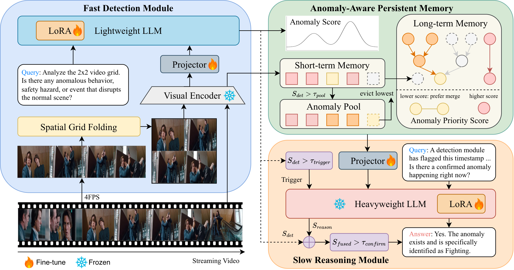

We present ReactVAU, a slow-fast decoupled framework for streaming video anomaly understanding. A lightweight detector continuously scans the stream for suspicious events, while an anomaly-aware memory module preserves critical visual evidence and a heavyweight reasoning module is activated only when needed.
This design makes the system causal by construction, reduces redundant computation on normal content, and enables fine-grained anomaly reasoning in real-world streaming environments where future frames are unavailable.

Overview of ReactVAU. A lightweight Fast Detection module continuously monitors the stream, while anomaly-aware persistent memory preserves critical evidence and activates the Slow Reasoning module only when suspicious events occur.
@inproceedings{chen2026reactvau,
author = {Chen, Chia-Hui and Yeh, Shih-Ying and Yang, Fu-En and Chen, Min-Hung and Lai, Shang-Hong},
title = {ReactVAU: A Slow-Fast Decoupled Framework for Streaming Video Anomaly Understanding},
booktitle = {European Conference on Computer Vision},
year = {2026}
}